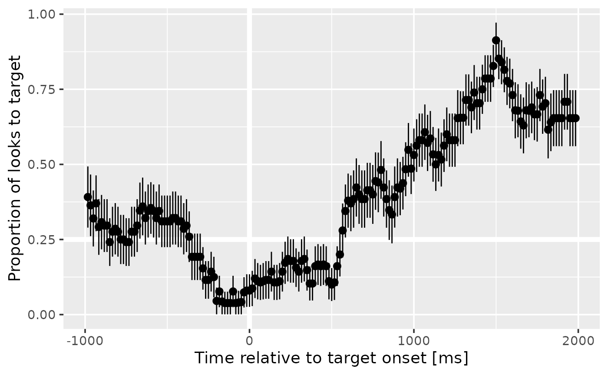

Aggregate looks
aggregating-looks.RdAggregate the number of looks to each response type over some grouping variables like Subject, Time, Condition.
Arguments
- data
a long data frame of looking data
- resp_def
a response definition or a list of response definition.
- formula
an aggregation formula. The lefthand terms will be grouping variables, and the righthand term is the column with eyetracking responses.
- resp_var
Name of the column that contains eyetracking responses
- ...
Grouping columns.
Value
a dataframe of the grouping columns along with the number of looks to each response type, the proportion (and standard error) of looks to the primary response, and the proportion (and standared error) of missing data.
Details
This function is the main tool for preparing eyetracking data for a growth
curve analysis. For example, an aggregation formula like Subject + Time ~ Gaze would provide the number of looks to each image over time for each
subject.
aggregate_looks() uses an aggregation formula like
stats::aggregate(), whereas aggregate_looks2() uses column names.
Examples
target_def <- create_response_def(
label = "looks to target",
primary = "Target",
others = c("PhonologicalFoil", "SemanticFoil", "Unrelated"),
elsewhere = "tracked",
missing = NA)
four_image_data |>
aggregate_looks(target_def, Subject + TrialNo ~ GazeByImageAOI)
#> # A tibble: 24 × 15
#> .response_def Subject TrialNo PhonologicalFoil SemanticFoil Target Unrelated
#> <chr> <chr> <int> <int> <int> <int> <int>
#> 1 looks to targ… 001P 1 232 80 250 105
#> 2 looks to targ… 001P 2 181 93 242 160
#> 3 looks to targ… 001P 3 79 101 231 66
#> 4 looks to targ… 001P 4 188 135 123 145
#> 5 looks to targ… 001P 5 90 170 164 79
#> 6 looks to targ… 001P 6 70 198 172 24
#> 7 looks to targ… 001P 7 83 47 109 195
#> 8 looks to targ… 001P 8 60 63 77 40
#> 9 looks to targ… 001P 9 71 50 50 50
#> 10 looks to targ… 001P 10 57 305 150 82
#> # ℹ 14 more rows
#> # ℹ 8 more variables: Elsewhere <dbl>, Missing <dbl>, Others <dbl>,
#> # Primary <dbl>, Looks <dbl>, Prop <dbl>, PropSE <dbl>, PropNA <dbl>
four_image_data |>
aggregate_looks(target_def, Subject ~ GazeByImageAOI) |>
str()
#> tibble [1 × 14] (S3: tbl_df/tbl/data.frame)
#> $ .response_def : chr "looks to target"
#> $ Subject : chr "001P"
#> $ PhonologicalFoil: int 2461
#> $ SemanticFoil : int 2478
#> $ Target : int 4094
#> $ Unrelated : int 2033
#> $ Elsewhere : num 1202
#> $ Missing : num 8642
#> $ Others : num 6972
#> $ Primary : num 4094
#> $ Looks : num 20910
#> $ Prop : num 0.37
#> $ PropSE : num 0.00459
#> $ PropNA : num 0.413
# With column names
four_image_data |>
aggregate_looks2(target_def, GazeByImageAOI, Subject, TrialNo)
#> # A tibble: 24 × 15
#> .response_def Subject TrialNo PhonologicalFoil SemanticFoil Target Unrelated
#> <chr> <chr> <int> <int> <int> <int> <int>
#> 1 looks to targ… 001P 1 232 80 250 105
#> 2 looks to targ… 001P 2 181 93 242 160
#> 3 looks to targ… 001P 3 79 101 231 66
#> 4 looks to targ… 001P 4 188 135 123 145
#> 5 looks to targ… 001P 5 90 170 164 79
#> 6 looks to targ… 001P 6 70 198 172 24
#> 7 looks to targ… 001P 7 83 47 109 195
#> 8 looks to targ… 001P 8 60 63 77 40
#> 9 looks to targ… 001P 9 71 50 50 50
#> 10 looks to targ… 001P 10 57 305 150 82
#> # ℹ 14 more rows
#> # ℹ 8 more variables: Elsewhere <dbl>, Missing <dbl>, Others <dbl>,
#> # Primary <dbl>, Looks <dbl>, Prop <dbl>, PropSE <dbl>, PropNA <dbl>
four_image_data |>
aggregate_looks2(target_def, GazeByImageAOI, Subject) |>
str()
#> tibble [1 × 14] (S3: tbl_df/tbl/data.frame)
#> $ .response_def : chr "looks to target"
#> $ Subject : chr "001P"
#> $ PhonologicalFoil: int 2461
#> $ SemanticFoil : int 2478
#> $ Target : int 4094
#> $ Unrelated : int 2033
#> $ Elsewhere : num 1202
#> $ Missing : num 8642
#> $ Others : num 6972
#> $ Primary : num 4094
#> $ Looks : num 20910
#> $ Prop : num 0.37
#> $ PropSE : num 0.00459
#> $ PropNA : num 0.413
phonological_def <- create_response_def(
label = "looks to phonological foil",
primary = "PhonologicalFoil",
others = c("Target", "SemanticFoil", "Unrelated"),
elsewhere = "tracked",
missing = NA)
# Aggregate looks to multiple response definitions at once
defs <- list(target_def, phonological_def)
four_image_data |>
aggregate_looks(defs, Subject + BlockNo ~ GazeByImageAOI) |>
dplyr::select(.response_def, Subject, BlockNo, Primary:PropNA) |>
dplyr::mutate(
Prop = round(Prop, 3),
PropSE = round(PropSE, 3),
PropNA = round(PropNA, 3)
)
#> # A tibble: 4 × 8
#> .response_def Subject BlockNo Primary Looks Prop PropSE PropNA
#> <chr> <chr> <int> <dbl> <dbl> <dbl> <dbl> <dbl>
#> 1 looks to target 001P 1 1439 11224 0.357 0.008 0.591
#> 2 looks to target 001P 2 2655 9686 0.377 0.006 0.207
#> 3 looks to phonological foil 001P 1 937 11224 0.233 0.007 0.591
#> 4 looks to phonological foil 001P 2 1524 9686 0.217 0.005 0.207
# Compute a growth curve
growth_curve <- four_image_data |>
adjust_times(Time, TargetOnset, Subject, BlockNo, TrialNo) |>
aggregate_looks(target_def, Time ~ GazeByImageAOI) |>
dplyr::filter(-1000 <= Time, Time <= 2000)
library(ggplot2)
ggplot(growth_curve) +
aes(x = Time, y = Prop) +
geom_hline(linewidth = 2, color = "white", yintercept = .25) +
geom_vline(linewidth = 2, color = "white", xintercept = 0) +
geom_pointrange(aes(ymin = Prop - PropSE, ymax = Prop + PropSE)) +
labs(
y = "Proportion of looks to target",
x = "Time relative to target onset [ms]"
) +
theme_grey(base_size = 14)
